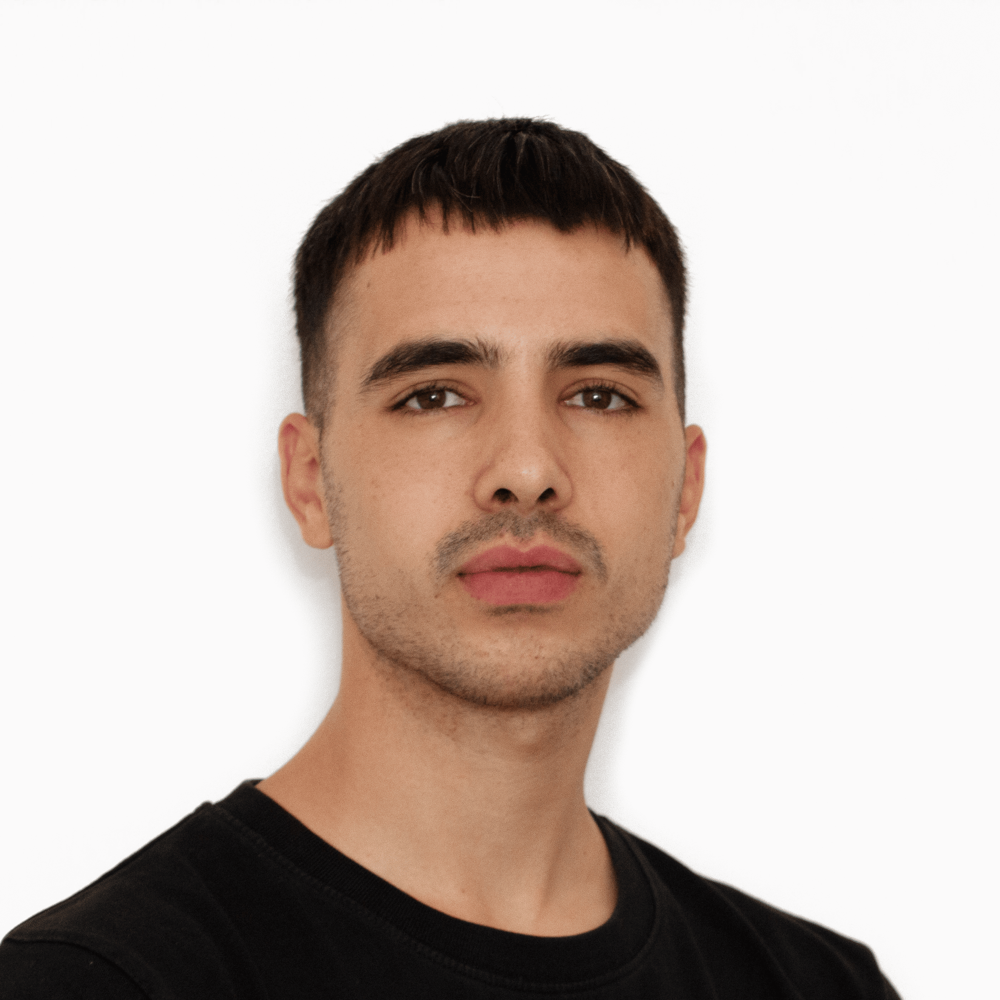
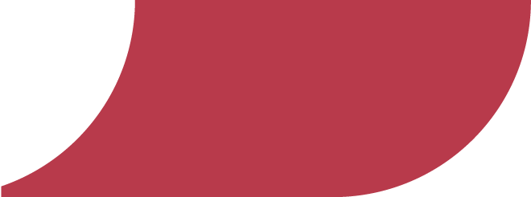
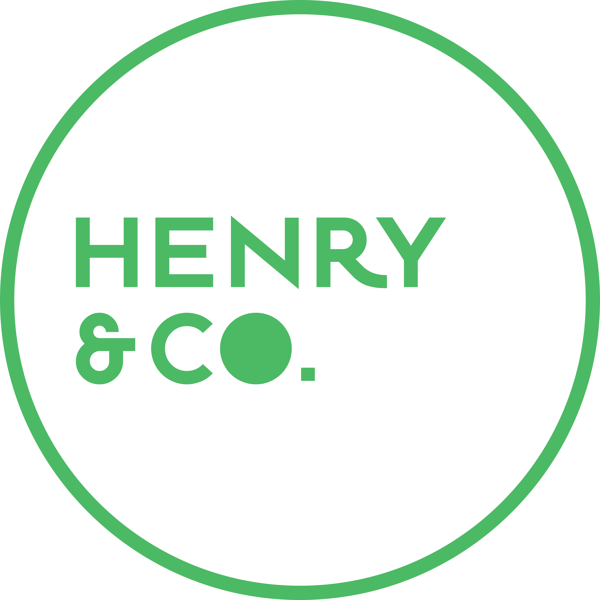
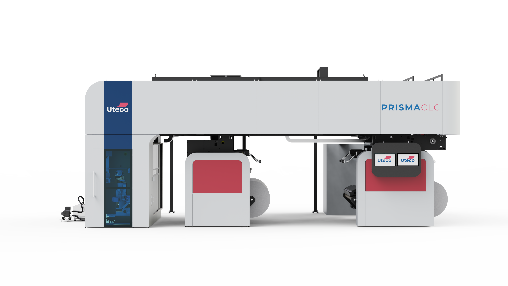
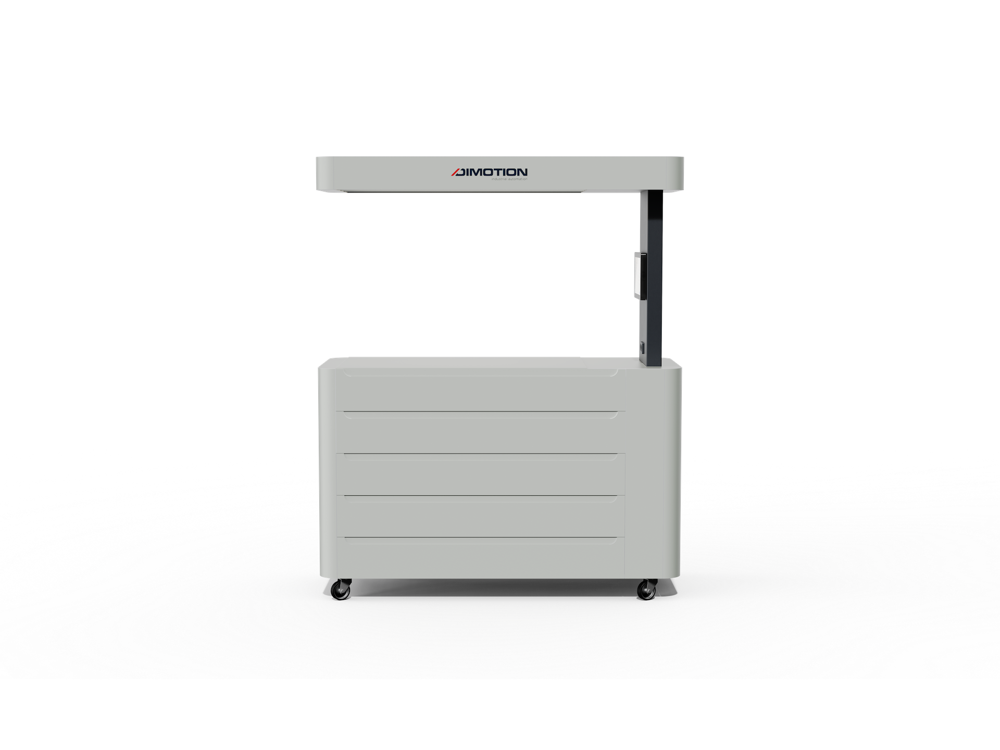
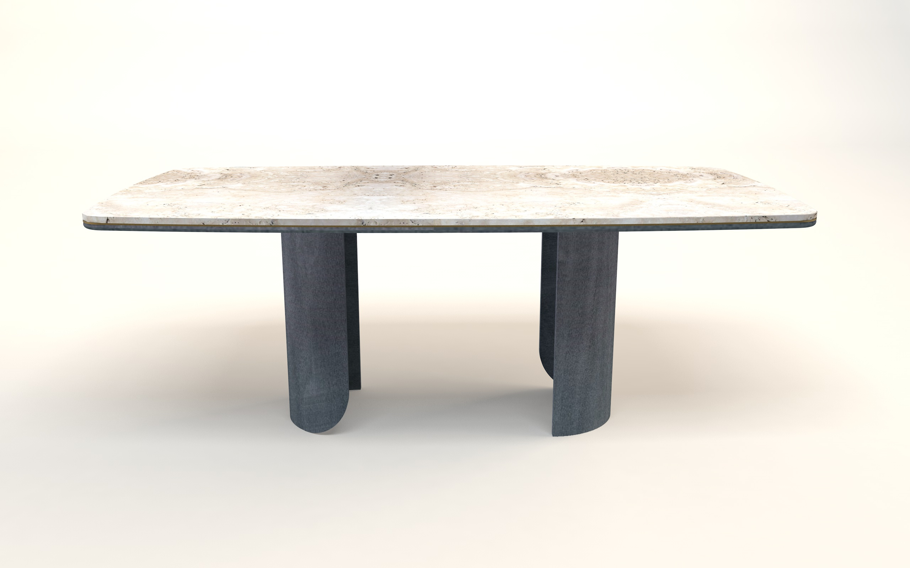
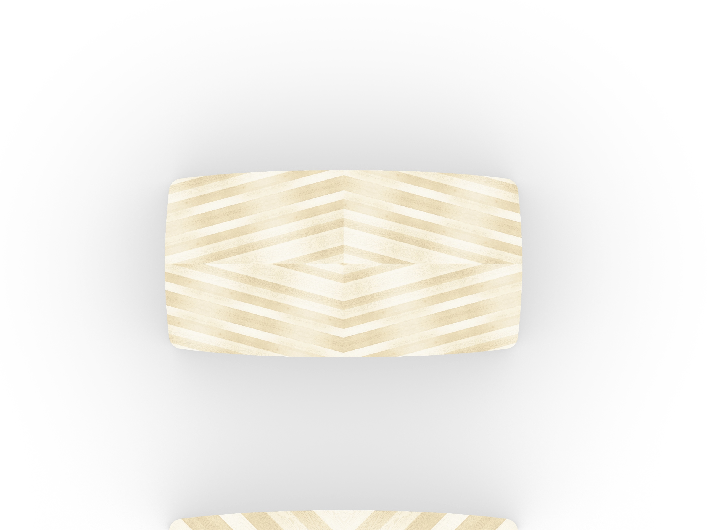
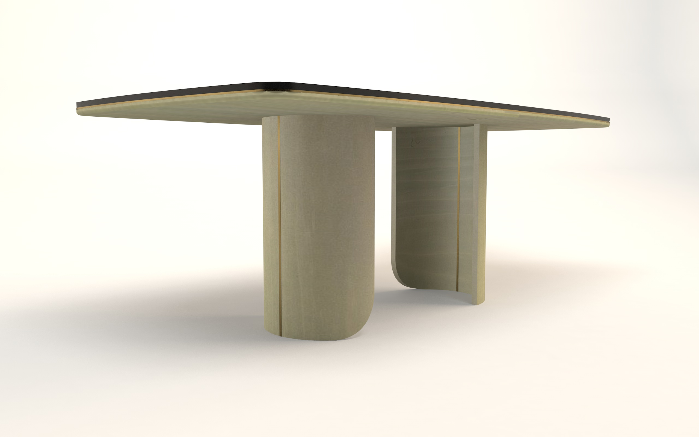
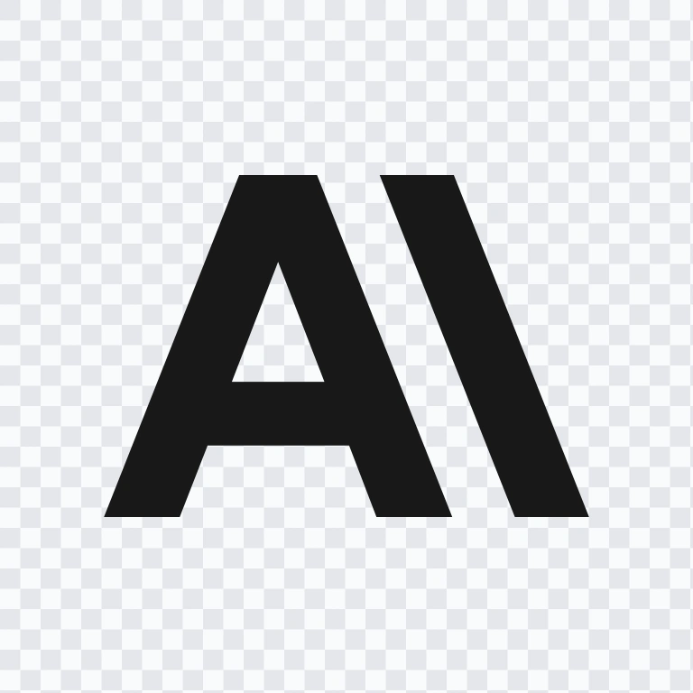

Product & R&D Project Manager
Gestisco l'intero ciclo di vita di prodotti industriali complessi — dall'analisi di mercato al prototipo fisico — coordinando team R&D cross-funzionali dal brief alla validazione.

Chi sono
Ho costruito una base completa in product & design management — ideazione di prodotto, analisi di mercato, definizione dei requisiti e gestione del progetto — e in quattro anni di lavoro sono diventato Product & Project Manager R&D, seguendo in prima persona lo sviluppo di macchine da stampa e converting di livello internazionale. Parallelamente al lavoro a tempo pieno, sto conseguendo una laurea in Economia Aziendale e Management.
Product Management
Analisi di mercato e competitive intelligence, definizione dei requisiti di prodotto, business planning, roadmap e gestione del ciclo di vita dal concept al lancio.
R&D Project Management
Coordinamento di team cross-funzionali, gestione multi-progetto con Gantt e milestone monitorate, monitoraggio di tempi, budget e obiettivi tecnici fino alla validazione del prototipo.
Esperienze professionali

Uteco Converting SpA
03/2022 — presente
Verona, Italia
Product & Project Manager — R&D Product Innovation
Sviluppo di nuove famiglie di prodotto nel segmento delle macchine da stampa flessografica e converting per il packaging flessibile. Ho seguito l'intero processo — dalla diagnosi di mercato alla validazione del prototipo fisico — coordinando team cross-funzionali di circa 12 persone tra progettazione meccanica, elettrica, software, acquisti e marketing. Gestione simultanea di fino a 5 progetti R&D con metodologie strutturate: QFD, AHP, Design to Cost, Stage-Gate e Gantt multi-livello.

Henry & Co. Design Studio
02/2021 — 07/2021
Verona, Italia
Product Design Intern
Sviluppo di concept di prodotto applicando il Circular Design Thinking, metodologia proprietaria dello studio che integra principi di economia circolare nel processo progettuale. Analisi di mercato, definizione requisiti, concept design e modellazione 3D. Progettazione del tavolo Edo per Cafedesart, selezionato per il Salone del Mobile 2022 di Milano.
Progetti selezionati
Tre progetti che mostrano approcci diversi: dalla gestione di un programma R&D complesso, al lancio di un prodotto satellite in un segmento nuovo, al product design per il mercato del lusso.
01
PRISMA NCL23
R&D Project Manager · Uteco Converting SpA

Nuova gamma di macchine Coating & Laminating per Uteco — dal concept al prototipo fisico presentato a Drupa 2024. Obiettivo: +10% di market share nel segmento C&L in 5 anni.
Il problema di business
Uteco deteneva una quota marginale su un mercato da oltre 260 M€, con vendite C&L stagnanti da cinque anni nonostante una crescita sostenuta del settore. L'analisi interna rivelava una gamma frammentata — bassa condivisione di componenti tra le macchine, alta percentuale di larghezze mai ordinate — e un posizionamento di prezzo non competitivo rispetto ai principali player europei (Bobst, NordMeccanica, Comexi). L'obiettivo: ridisegnare l'intera gamma secondo logiche di modularità, Design to Cost e family feeling con la nuova gamma flessografica.
Metodologia e processo
01
Diagnosi di mercato
Benchmark competitivo su 4 player principali, analisi portfolio capability e identificazione dei gap non presidiati da Uteco.
02
AHP + QFD
Ponderazione di 15 bisogni di mercato via AHP. Traduzione in 67 requisiti funzionali misurabili via QFD con target quantitativi per design driver.
03
Design to Cost
Target cost per modulo, commonality analysis, beachhead strategy e 15 moduli standard con interfacce meccaniche, elettriche e di segnale unificate.
04
Sviluppo R&D
Coordinamento di ~12 persone tra progettazione meccanica, elettrica, software, acquisti e marketing. Gantt multi-livello con milestone bimestrali.
05
Test Plan
Pianificazione e coordinamento dei test funzionali, di processo e di validazione. Redazione del test plan con tutti gli attori coinvolti.
06
Lancio Drupa 2024
Coordinamento della preparazione commerciale — pricing, materiali marketing, training venditori — per il lancio alla fiera internazionale Drupa 2024.
Target progettuali
−12%
Costi materiali
−60%
Codici unici supply chain
−50%
Tempo change over
−27%
Ingombro triplex
Gli 8 design driver
Il progetto è stato strutturato attorno a 8 driver progettuali: Design to Cost per la competitività di prezzo, Design for Supply Chain per ridurre la frammentazione dei componenti, Design for Assembly per ottimizzare i tempi interni, Design for Productivity con automazioni di change over e setup, Design for Compactness per ridurre l'ingombro della configurazione triplex, Design for Sustainability con recupero adesivo e riduzione scarti, Design for Configurability con 15 moduli standard e interfacce unificate, Design for Serviceability con upgrade plug & play.
PRISMA CLG su uteco.com ↗02
Flexlight
Product Manager · Uteco Converting SpA

Prodotto satellite per l'ispezione offline della qualità di stampa — sviluppato per completare il portfolio Uteco e aprire un nuovo stream di vendite nel segmento mid-low, non presidiato dai competitor al momento dell'analisi.
Contesto strategico
Attorno alle macchine da stampa Uteco gravita un ecosistema di prodotti satellite — sistemi di stoccaggio, tavoli di ispezione, lavatori di anilox — che i clienti acquistano da terze parti. L'analisi dell'ecosistema ha identificato il tavolo di ispezione come punto di ingresso strategico: ciclo di sviluppo breve e un gap preciso nel posizionamento mid-low, non occupato da nessun player. I competitor si dividevano tra prodotti basic senza tecnologia e soluzioni high-tech ad alto prezzo, senza nulla nel mezzo.
Processo
01
Analisi ecosistema
Mappatura dei prodotti satellite per tipologia di macchina (Flexo, Roto, C&L), stima dello sforzo ingegneristico e identificazione del prodotto con il miglior rapporto impatto/effort.
02
AHP + QFD + Requisiti
Interviste agli utenti interni, definizione dei bisogni chiave, applicazione di AHP e QFD per tradurli in requisiti funzionali prioritizzati e specifiche tecniche misurabili.
03
Concept & Target Cost
Concept sviluppato con modellazione 3D. Target cost per module-level. Posizionamento mid-low con specifiche mid-high: ISO 3364:2009, microscopio Dino-Lite integrato, monitor touch, superficie inclinabile.
04
Sviluppo & Prototipazione
Gestione del Gantt bisettimanale con 7 fasi presidiate. Il progetto ha raggiunto il secondo prototipo fisico, attualmente in fase di validazione.
03
Edo
Product Designer · Henry & Co. / Cafedesart



Tavolo da pranzo per Cafedesart, brand italiano di arredo di lusso Art Déco e Mid Century. Selezionato per il Salone del Mobile 2022 di Milano. Sviluppato con il metodo Circular Design Thinking di Henry & Co.
Il contesto
Henry & Co. applica il Circular Design Thinking, metodologia strutturata in quattro fasi non lineari — Comprensione, Definizione, Sviluppo e Pubblicazione — che integra principi di economia circolare nel processo progettuale. Il brief di Cafedesart richiedeva un tavolo da pranzo moderno, leggero nelle forme, adatto al living contemporaneo, coerente con il DNA Art Déco e Mid Century del brand.
01
Analisi di mercato
Studio dell'offerta competitor per dimensioni, forme, materiali e posizionamento. Gap identificato: tavolo moderno con forme organiche e materiali naturali.
02
Concept & 3D
Piano dalle proporzioni ampie con angoli arrotondati, basi cilindriche asimmetriche. Modellazione in Rhino e Shapr3D con iterazioni sulla geometria.
03
CMF Selection
Piallacciature in legno con pattern intarsiati geometrici (X e Diamond) in varianti chiare e scure. Dettaglio in ottone sul bordo del piano.
04
Salone del Mobile
Il prototipo fisico è stato selezionato per il Salone del Mobile 2022. Il tavolo Edo è attualmente in vendita nel catalogo Cafedesart.
Formazione
Economia Aziendale e Management
Università di Verona
2025 — in corso
Percorso part-time in parallelo al lavoro a tempo pieno, per integrare le competenze tecniche con una solida base strategica e di business.
Product & Design Management
ITS Machina Lonati, Brescia
2019 — 2021
Diploma con 98/100. Competenze in product management, project management e product design con focus su ideazione, sviluppo e prototipazione rapida.
Elettronica ed Elettrotecnica
ITIS G. Marconi, Verona
2014 — 2019
Conoscenze di base di sistemi elettronici e informatici, utili per la comprensione tecnica dei prodotti industriali gestiti.
Certificazioni

AI Fluency Framework & Foundations
Anthropic
Giugno 2026
Collaborare con sistemi di intelligenza artificiale in modo efficace, efficiente, etico e sicuro. Approccio strutturato all'interazione uomo-AI, con focus sulle capacità e i limiti delle tecnologie AI attuali. Fornisce le basi concettuali per utilizzare gli strumenti AI in modo strategico anziché reattivo.
Contatti
Sono sempre disponibile per una conversazione — product management, R&D project management o un progetto interessante.
zorzi.diego.00@gmail.com LinkedIn — Diego Zorzi